Objective
To investigate a potential command injection attempt involving the use of the ls command detected within the requested URL, determine the intent and impact of the activity, validate whether the command was executed successfully on the target system, and apply appropriate containment and escalation procedures if necessary.
Investigation steps
Open the alert and review the details in the alert, which outlines IP addresses involved, HTTP request method, trigger for alert and device action.
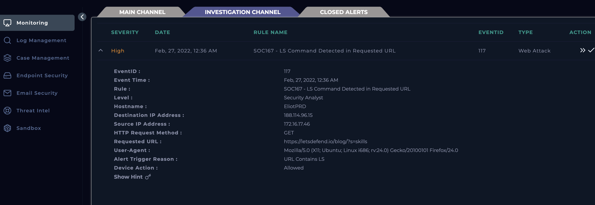
Once reviewed alert, created a case for the alert and owned the case to run through the playbook.
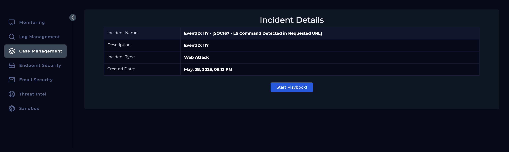
To identify which two devices are involved, I headed over to the endpoint security module and searched for both the source and destination IP address derived from the initial alert. From this we can see the source IP is an internal device and sending a request to an external device. Also, we can identify the user being Eliot and last login being 27/02/2022 at 12am which was around the time the incident took place.
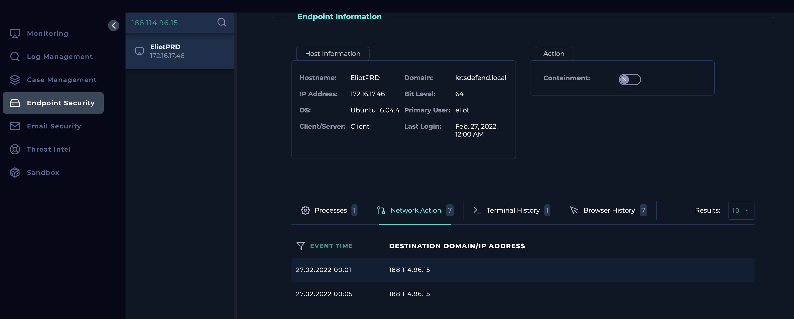
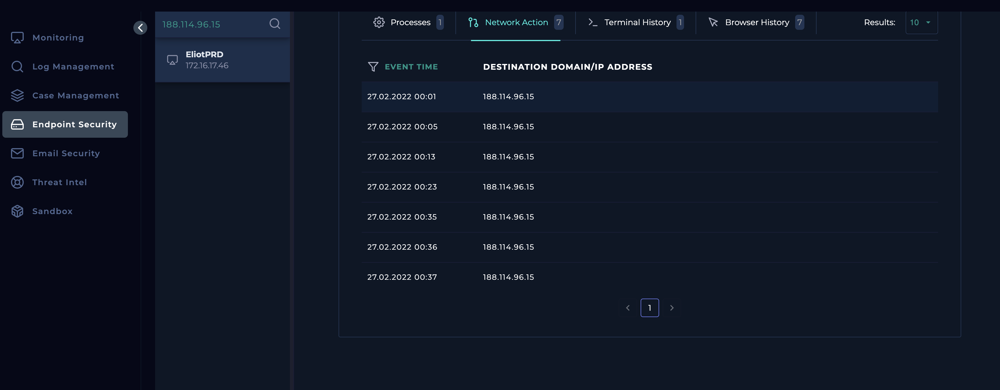
Checked the destination IP address against Virus Total which appeared as non-malicious and likewise with the source IP address having a community score of 0.
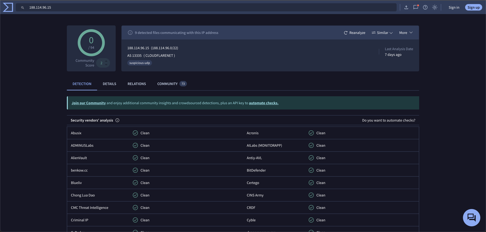
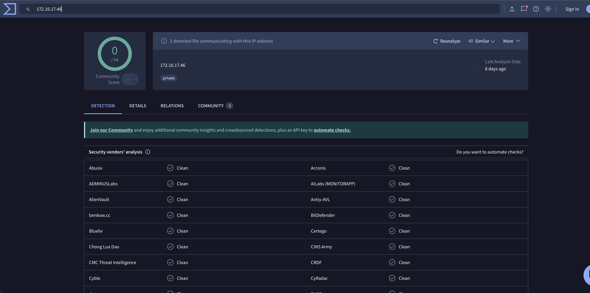
Gathering further info from AbuseIPDB, the destination IP seems to belong to a domain name of CloudFlare.com and country being Germany. However, the IP address looks to be clean with 0% confidence of abuse while having it reported 4 times over 2 years. The source IP address seems to be a private IP address as suggested by AbuseIPDB
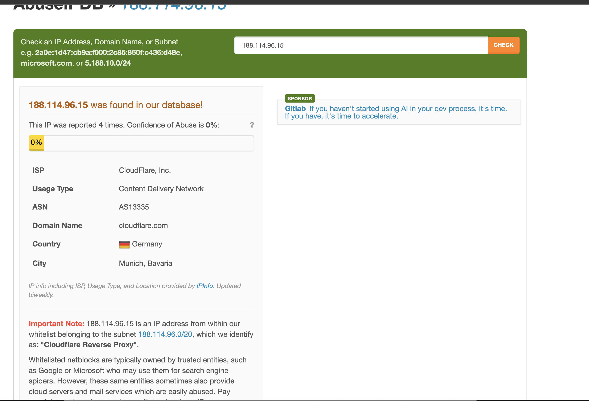
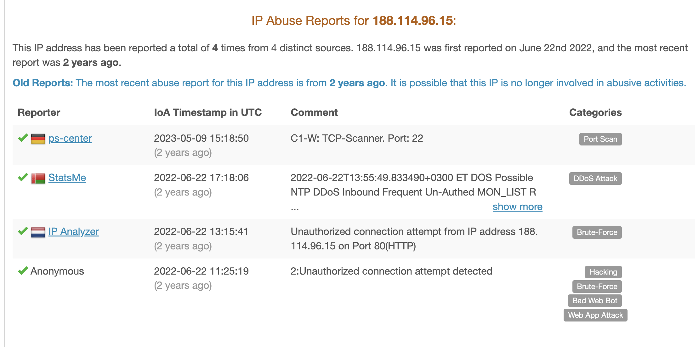
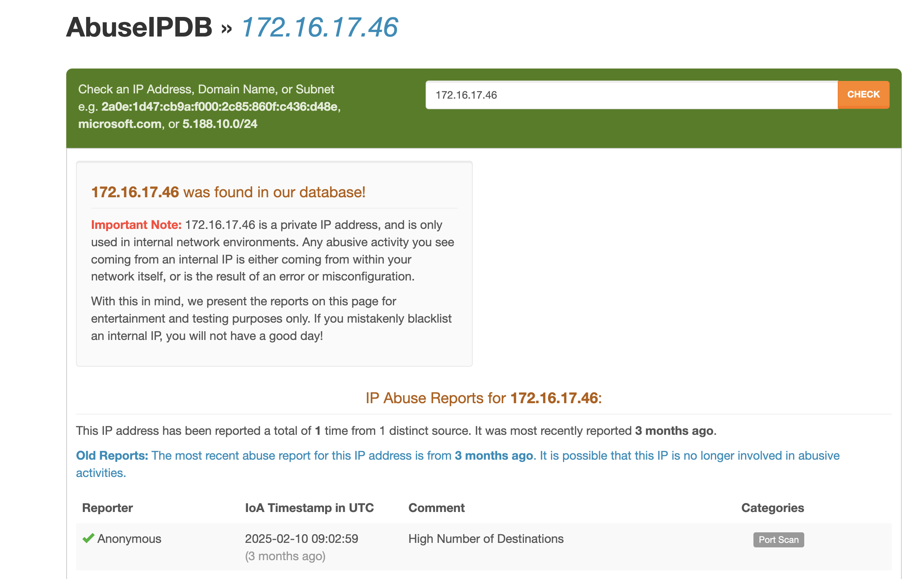
Having the log filtered by destination IP of the alert, I was able to see multiple requests sent to this destination address, where one of the requests was sent on 25/01 by a different source IP and the remaining were all 27/02/2022 from the source IP in the alert.
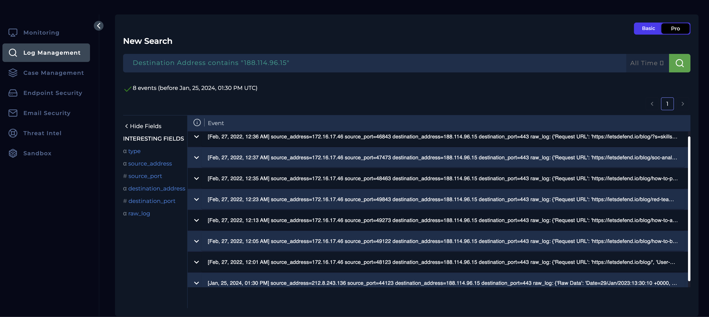
Upon reviewing the record in log management that matches the date and time in the alert, it seems like this particular request is not a threat other than accessing the letsdefend website and it contained a typical search parameter used in WordPress-based sites to search for posts containing the keyword "skills".
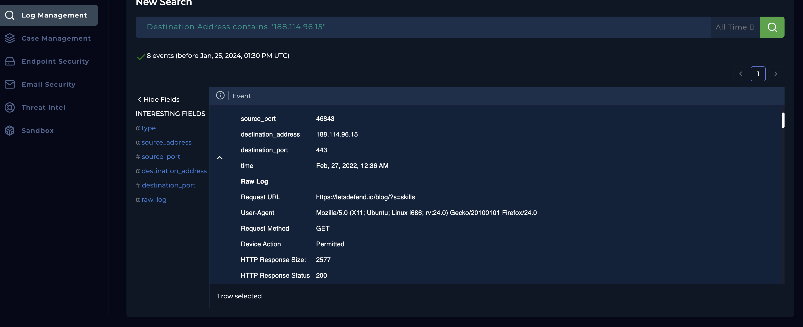
Although the triggered HTTP request seems harmless, it was worth reviewing all requests from the source to draw out the chances of malicious traffic in any of the other requests, but they also seemed clean without any signs of command injected to URL.
Closed the alert as concluded as false positive
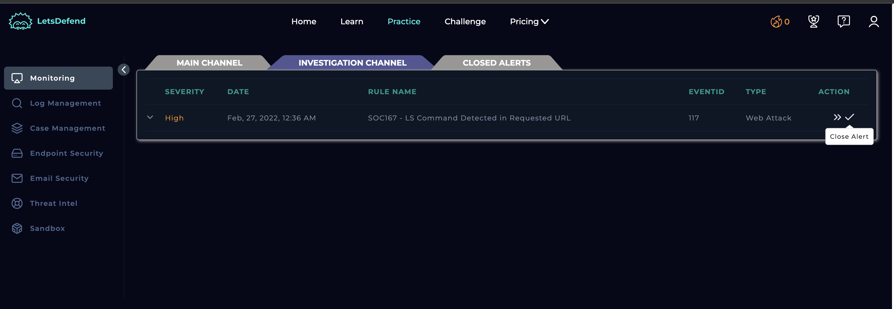
Analysis
On February 27, 2022, at 12:36 AM, an alert titled "SOC167 - LS Command Detected in Requested URL" was triggered. The alert originated from a GET request sent by internal user Eliot (IP: 172.16.17.46) to an external destination IP address 188.114.96.15, which currently has no known malicious reputation according to AbuseIPDB and VirusTotal.
The request that triggered the alert was to the URL:
https://letsdefend.io/blog/?s=skills
Upon analysis, this URL is part of a legitimate blog search function on LetsDefend’s platform, with the query parameter s=skills being used to search for relevant blog content. The SIEM system appears to have falsely identified the presence of the string “ls” in the parameter as a potential command injection attempt.
Log review showed that multiple HTTP requests were made from Eliot’s system to the same destination, all of which were non-malicious and consistent with normal browsing behavior. Based on these findings, the alert has been confirmed as a false positive, and no further action is required.
Key learnings
- Developed Understanding of False Positives Learned how certain benign search parameters (e.g., s=skills) can be misinterpreted by security systems as potential command injection attempts, reinforcing the importance of contextual analysis.
- Improved Log Analysis Skills Practiced reviewing HTTP request logs and user behavior to validate whether an alert was legitimate or a false positive.
- Threat Intelligence Correlation Used tools like VirusTotal and AbuseIPDB to assess the reputation of external IP addresses and make informed decisions about whether a communication was malicious.
- User Attribution and Internal Activity Validation Gained experience in tracing activity back to internal users (in this case, Eliot) and assessing whether the behavior aligns with normal usage patterns.
- Refined Alert Triage Process Followed a structured approach to triage, investigate, and close alerts—ensuring accurate documentation and efficient incident handling.
- Enhanced Decision-Making in Alert Resolution Strengthened ability to confidently close low-risk alerts based on multi-source evidence, reducing unnecessary escalations and optimizing SOC efficiency.